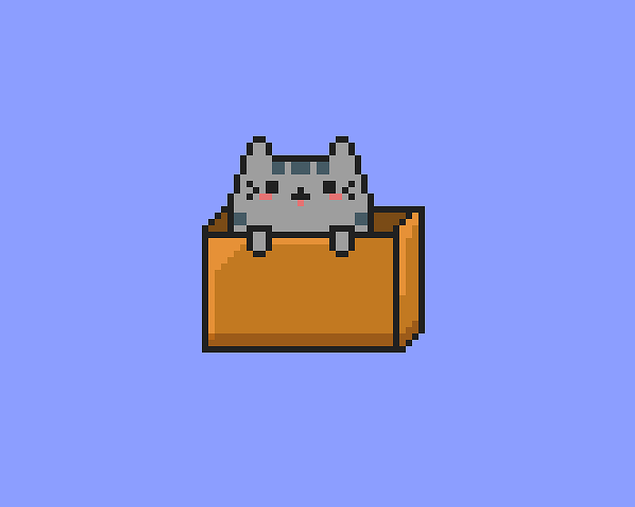

Фритрек и нулевой спринт: Подготовка к работе
</HTML>

Это было самое начало пути. На этом этапе важно было проникнуться основами и настроиться на учёбу. И, возможно, подумать, как новые знания могут повлиять на ваше будущее.
Нулевой спринт действительно заинтриговал: доступная подача материла и задачки в тренажёре вызвали интерес и желание пробовать начать обучение.